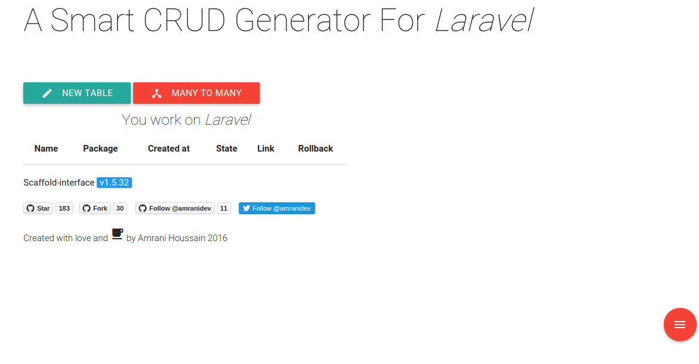
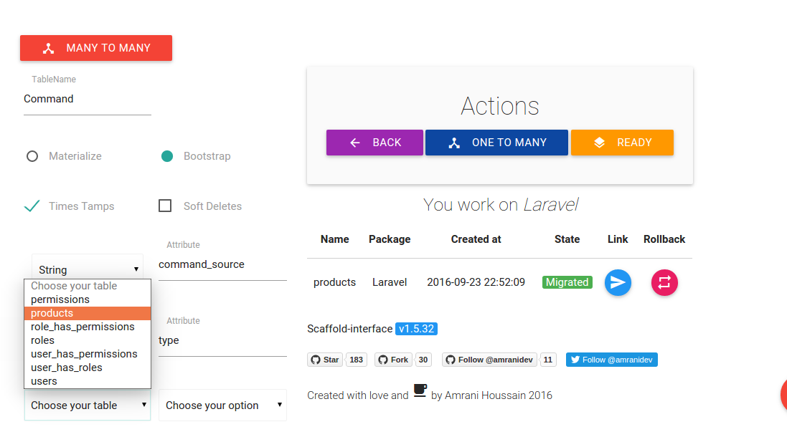

Scaffold-Interface (full documentation page)
Overview
The scaffold-interface is a pakcage builds for laravel web framework that allows you to develop your web project faster and easier saving a lot of times, with a powerful CRUD generator with relationships (ManyToMany, OneToMany), also an admin controle panel with a user management system using spatie.
Features
-
Generate your model,views,controller and migrations just in a few clicks.
-
Views support Bootstrap and Materializecss.
-
Generate OneToMany relationships including views and controllers.
-
Generate ManyToMany relationships.
-
Websocket using Pusher Notifications.
-
AdminLTE dashboard template with users management system (users-roles-permissions) using laravel-permission.
-
Softdeletes and timestamps.
-
A delete confirmation message.
-
Using an interface to design your table.
-
Rollbacking possibility.
-
Generate CRUD for packages, see Lpackager, CRUD for packages/modules.
Requires
- PHP >=5.6
Configuration
This package has been supported for laravel v5.1, v5.2 and v5.3
| Laravel version | Scaffold-Interface version |
|---|---|
| v5.1 | v1.4.11 or less |
| v5.2 and v5.3 | v1.5.* |
I. Package installation
Run composer require to install Scaffold-Interface:
Add the package to your dependencies in composer.json:
require : {
"Amranidev/scaffold-interface": "v1.5.*"
}
Then update composer:
$ composer update
Add the service providers to config/app.php:
Amranidev\ScaffoldInterface\ScaffoldInterfaceServiceProvider::class,
Amranidev\Ajaxis\AjaxisServiceProvider::class,
Spatie\Permission\PermissionServiceProvider::class,
Publish the assets in your application with:
$ php artisan vendor:publish
- What does this package publishes:
- app/Http/Controllers/UserController.php
- app/Http/Controllers/RoleController.php
- app/Http/Controllers/PermissionController.php
- resources/views/scaffold-interface
- public/js/scaffold-interface-js
- public/css/scaffold-interface-css
- config/amranidev/config.php
- database/migrations/migration_file
Migrate for the Scaffold Interface table:
$ php artisan migrate
Auth scaffolding:
$ php artisan make:auth
Congratulations, you have successfully installed Scaffold Interface!
II. Usage
To get access to the interface go to : http://{your-project-url}/scaffold.

Click on new table button and start fill fields, then click on ready and done.
You have successfully created your entity.
To migrate your schema just click on migrate button.

Well now you can start usign your entity.
To rollback your entity just rollback its table from database by clicking on rollback button first, then click on delete button to be deleted form your app.
III. Relationships
1. OneToMany
This package provides a simple short way to generate OneToMany relationship.
We could use our previous example Product entity.
So lets create a new entity called Command.
Before ending creation, click on OneToMany button, choose product table, choose associated filed and click on OneToMany Button again to be confirmed.

This will create model with relation methods ,views, controller and migration file contains foreignkeys, for sure you can change whatever you want.
Then click on migration button.

2. ManyToMany
To generate ManyToMany relationship between tow tables, click on ManyToMany button, chosse tables from combobox then click on create.
Well, this will create a new pivot table schema ready to be migrated, adding ManyToMany raltionship methods to models.
This doesn't create views,controllers and routes, because we belive that evrey web artisan has his own unique methodology.

III. Controle Panel AdminLTE
Scaffold-interface provids a simple controle panel contains user managment system using spatie package so menage your users-roles-permissions easily.
Go a head to terminal and create a new user.
$ php artisan tinker:
$user = new \App\User();
$user->name = "john doe";
$user->email = "jhondoe@example.com";
$user->password = Hash::make("password");
$user->save();
Add HasRole dependency to app/User.php:
use Illuminate\Foundation\Auth\User as Authenticatable;
use Spatie\Permission\Traits\HasRoles;
class User extends Authenticatable
{
use HasRoles;
// ...
}
Then click on dashboard button and login.